Candy Maker · all connected wrapping source iterations
New whole-pose fold sources: A11–A13
All13 contact natives/43 state regions are now reviewed. These three single poses use the entire1254×1254 native canvas; none is sampled as four quarters. Every native and failed role is preserved. Source quality is separate from actual wrapping.
A11 · complete source 4.5/5
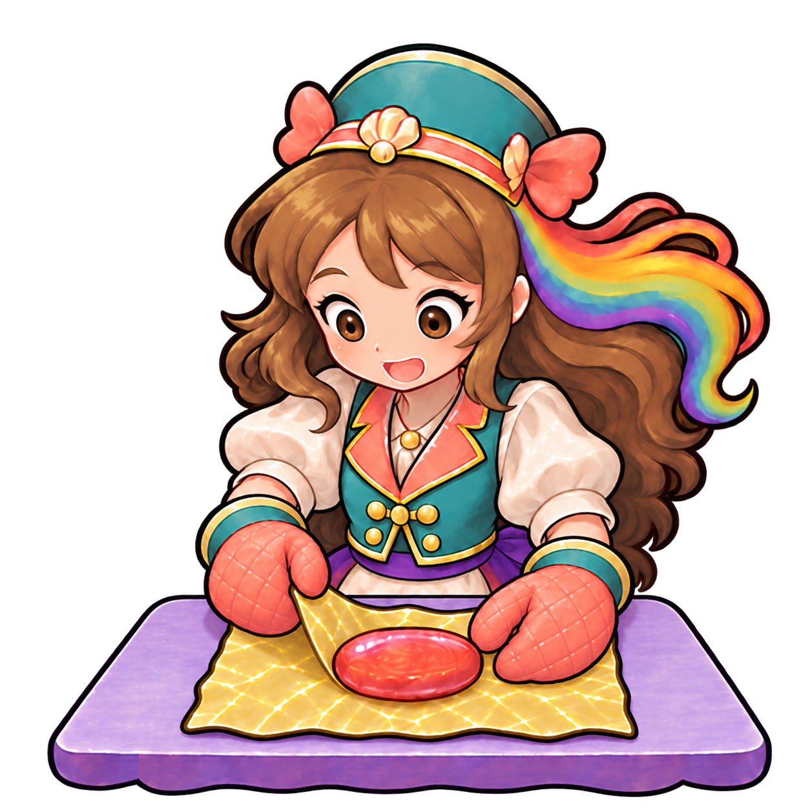
Original near-edge request remains failed4.0. Far-edge-first folding achieves the same wrapping purpose without a new design or invented mechanic; reuse this existing returned art for a separately declared far-fold component test. Source4.5 remains an inclusive priority and grants no action/runtime/owner pass.
Every individual opinion and promptA12 · complete source 4.3/5
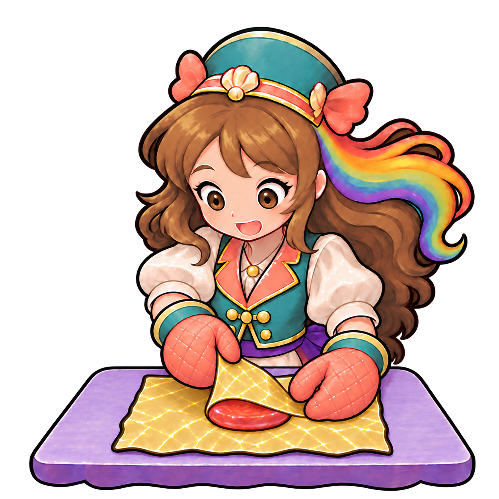
Complete generated native directly inspected. Whole source4.3 remains weak. Native is unbound/NPOT and not a temporal frame or current-game pass.
Every individual opinion and promptA13 · complete source 4.5/5
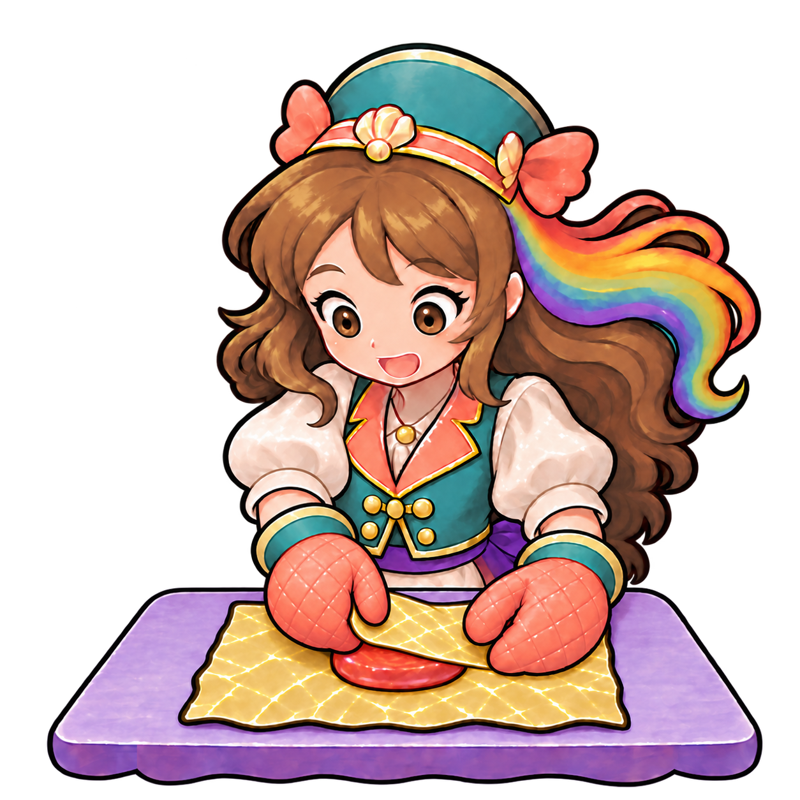
Complete original native directly inspected. Useful partial-fold pose reaches source-only drafting floor4.5 and remains an inclusive priority. Exact requested coverage4.2 is not met. No source-to-motion/runtime/owner acceptance transfer.
Every individual opinion and promptTen reversible built-in ImageGen source attempts. Every complete native source and all 40 individual states directly reviewed. A7 static endpoints 4.5–4.6; exact in-game contact action 4.1 remains rejected. A8/A9 bridges score 4.1; A10 scores 4.2. Loose pleats and released hands improve, while the sliding grip and conserved candy size remain below the floor.
Complete actual-input contact study · All exact source/state evaluations
Attempt 1 · complete source 4.2/5
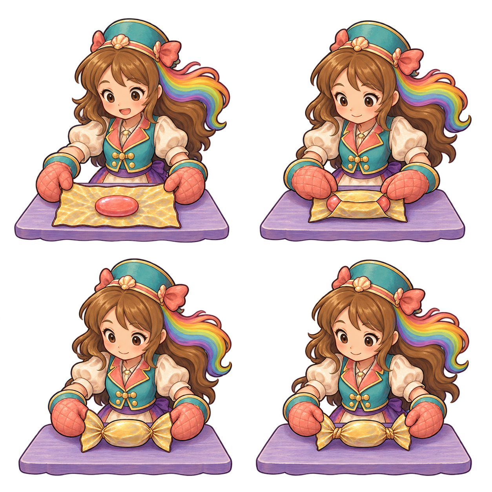
assets_src/imagegen/candy_wrap_contact_v1_20261003/attempt01/native.png · a70f8ad960af911a07e20b0aac8dca699bfedeaaac0b25f9c2da49297231dcd3open sheet:4.5/5 · long-edge fold:4.5/5 · neck pinch:4.2/5 · opposite wrist twist:4.2/5
identity/costume and painted medium 4.5/5. Brown-eyed child, rainbow hair, aqua baker cap/vest and coral quilted two mittens agree with inspected career atlas. Broad painted highlights and lavender table support agree with golden paper. Waist-up task close-up is a new candidate, not an accepted travel/room pose.
open paper contact 4.5/5. Two connected forearms and mittens touch the sheet edges; one exposed coral sweet rests on the supported paper.
long edge folding contact 4.5/5. Two mittens press the folded sheet around the belly; recognizable long flaps remain attached and sweet remains visible at either side.
pinch-neck contact 4.2/5. Both mittens grip the wide outer fans. The narrow necks at the candy-body edges are visibly untouched; those grasps cannot credibly pinch the necks.
end twist contact 4.2/5. Creased necks appear, but hands remain on the fans rather than twisting at the narrow necks. A changed prop still does not prove the specified useful motion.
complete wrapping source-key sequence 4.2/5. Better connected actor/eyes/support and matching golden material. Pinch/twist mechanics remain wrong and four source keys are not continuous animation. Preserve failure and retry the named lower-row hand contact before runtime study.
Exact generation prompt
Use case: illustration-story. Asset type: four sequential source pose keys for a child-friendly 2D game wrapping lesson, transparent RGBA atlas; not a cinematic or motion clip.
IMAGE_1 is Roshan identity and Candy Maker costume reference only: preserve her brown-eyed child face, brown hair with rainbow streaks, aqua baker cap with peach bow, puff sleeves, aqua vest with gold buttons, lavender sash and CORAL QUILTED MITTENS. Do not copy the whisk. IMAGE_2 is the exact candy and wrapper material reference: one coral-pink oval sweet, warm golden-yellow crinkled paper with plum outlines; open sheet, folded belly, covered candy with flared ends, twisted attached ends. Match that specific wrapper, not a bag, ribbon bow, foil sphere or different sweet.
Create one square transparent sprite atlas with four equal quadrants, one coherent waist-up Roshan working at a small lavender worktop in each quadrant. All four use the same front three-quarter camera, character size and position, head, shoulder, table, candy-center and paper scale. Her eyes attend the active paper contact. Two arms stay continuously connected to her shoulders. Exactly two mittened hands, with separate mitten thumb lobes; no bare hands. Table supports the same candy in every key. Frame 1 top-left: both mittens visibly grasp the long edges of the open paper, candy exposed. Frame 2 top-right: both mittens fold the long edges snugly over the candy belly. Frame 3 bottom-left: wrapped belly stays centered; each mitten thumb and palm visibly pinches one narrow neck beside the body, attached paper fans extend outward. Frame 4 bottom-right: both mittens finish the opposite end twists at those same necks; creased ends remain attached, covered belly and center stay fixed. Hands contact the paper in every frame, never floating above or behind it. Keep thumbs and paper boundary readable, avoid extra hands or duplicate candy. This is a quiet concentrating child doing useful work, no wave, whisk, cheering or unrelated ornament.
Style: polished PAINTED 2D storybook cutouts, broad gouache-like value bands, rounded pastel toy forms, clean deep-plum/navy contours, lavender shadows. Match the established costume, simplify excessive shine, no photoreal skin, no 3D render, no flat vector geometry. Genuine transparent space outside the connected Roshan/table subject. No text, dividers, grid lines, instruction arrows, gold progress arcs or background scenery. Leave wide transparent gutters in all four 50%-by-50% cells: complete hair, elbows, paper ends and table entirely inside each cell, none touching a cell border. Each subject centered at the same local coordinates. No runtime quality score is implied by this source sheet.
Original provenanceAttempt 2 · complete source 4.1/5
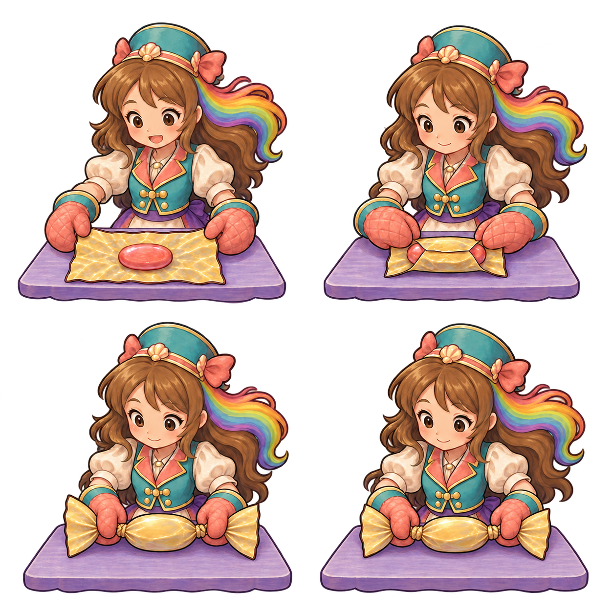
assets_src/imagegen/candy_wrap_contact_v1_20261003/attempt02/native.png · 0626b6a4fda3f3f7a526b126a10811015c95a98d3f14e3b3655f50d37a6cca12open sheet:4.5/5 · long-edge fold:4.5/5 · neck pinch:4.5/5 · opposite wrist twist:4.1/5
identity/costume and painted medium 4.5/5. Child identity, aqua/peach costume, quilted coral two mittens and painted golden paper conserved through targeted edit.
open paper contact 4.5/5. Two mittens grasp sheet edges, supported exposed candy retained.
long edge folding contact 4.5/5. Both mittens press attached flaps over belly; paper remains material rather than detached arrows.
pinch-neck contact 4.5/5. Both mitten thumb lobes now oppose palms at the narrow necks. Wide fans extend freely outward. Fixes specific A1 grip error.
opposite wrist twist 4.1/5. The last two hand poses remain nearly the same: neck contact is clearer, but the final wrists do not visibly roll in opposite directions. Cannot infer twist motion from the extra neck creases.
complete wrapping source-key sequence 4.1/5. Four source poses explain open/fold/pinch and retain matching paper. The same lower poses omit the visible twist, and covered belly/fan spread grows. Not temporal in-betweens or a passed runtime sequence.
Exact generation prompt
Use case: precise-object-edit. Edit target IMAGE_1 is a four-cell transparent Candy Maker Roshan wrapping source sheet. Keep the exact four-cell composition, character identity, painted 2D medium, face, hair, cap, costume, sleeves, mitten design, table, sweet and warm golden paper. Preserve existing alpha and complete shapes. Top two cells already show useful open/fold contact: keep those states.
Correct ONLY both hand grasps in the BOTTOM TWO cells. They currently grip the broad outer paper fans; that is mechanically wrong. Move both connected forearms and mittens inward so each coral mitten thumb opposes its palm around one NARROW NECK, immediately beside the covered candy belly. Left narrow neck and right narrow neck each need a visible mitten-thumb pinch. Keep the wide paper fans extending freely OUTSIDE those grips, not trapped under the palm. In bottom-left, both wrists are neutral while pinching the necks. In bottom-right, the two mitten/wrist poses visibly roll in opposite directions at those same necks to tighten the paper; show those tightened creases. Keep the candy belly supported and centered, same scale, no duplicate candy, no floating hands, no extra fingers, no whisk. Preserve two hands attached through continuous sleeves to the same shoulders and eyes looking down toward the task. A visible physical pinch is the priority, not a decorative hand laid beside the wrapper. No text, arrows, circles, motion lines, photoreal skin or 3D rendering. Return the complete transparent four-cell atlas.
Original provenanceAttempt 3 · complete source 4.2/5
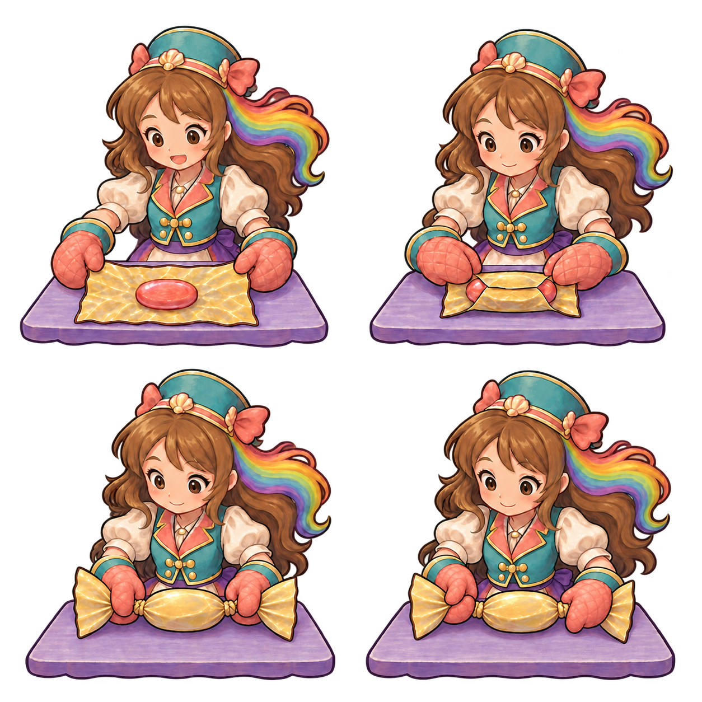
assets_src/imagegen/candy_wrap_contact_v1_20261003/attempt03/native.png · 44f56faf36de05945af71284de03353ceb790eb3b33f67ce9f411ced556e17f8open sheet:4.5/5 · long-edge fold:4.5/5 · neck pinch:4.5/5 · opposite wrist twist:4.5/5
identity/costume/painted material 4.5/5. Child identity/costume and coral quilted two mittens conserved, broad painted gold paper agrees with commissioned wrapper. Two continuously connected arms, no whisk.
open paper contact 4.5/5. Two mittens grasp the long edges, one exposed coral sweet supported on the same sheet.
long edge folding contact 4.5/5. Both mittens press attached long flaps over belly; material fold is explicit.
pinch-neck contact 4.5/5. Thumb lobes oppose palms at both narrow necks; paper fans extend freely outside grips.
opposite wrist-roll static meaning 4.5/5. Final left thumb rolls upward, right mitten rotates to a distinct downward grasp. Neck pinches remain connected to paper, unlike A1 fan grasps/A2 repeated neutral wrists. This score covers visible endpoint meaning, not motion.
fixed cell sequence continuity 4.2/5. Four source keys still differ in candy center, face and table placement. Not chronological in-betweens. Exact runtime sampling and transitions need independent review; no whole-action pass or interpolation to hide missing motion.
Exact generation prompt
Use case: precise-object-edit. IMAGE_1 is the current complete transparent four-pose Roshan wrapping sheet. Make a targeted edit to ONLY THE BOTTOM-RIGHT POSE. The bottom-left already pinches the correct two narrow paper necks. The bottom-right mistakenly repeats that hand pose and fails to show the useful wrist turn.
Keep all other three cells, the bottom-right face, hair, torso, costume, table, candy center/scale and paper material visually unchanged. In bottom-right, each mitten stays gripping its SAME narrow neck immediately beside the candy belly, with the wide paper fan extending freely outward. Explicitly rotate the LEFT wrist/mitten so we see its palm-side quilt seam and its thumb rolls upward; rotate the RIGHT wrist/mitten the opposite way so we see its back/knuckle-side quilting and thumb rolls downward. Those are two clearly different grasp orientations from the bottom-left neutral vertical mittens. Connected sleeves bend naturally to those wrists; no detached arm or hidden hand. The opposing rolls visibly tighten the two golden paper necks, leave body supported and centered. Keep exactly two coral mittens with one thumb each; no bare fingers, no additional hands. Do not just add creases while repeating the old wrist poses. Do not enlarge the sweet or move the table. Child-friendly painted 2D gouache storybook shading and plum outlines. Return the entire four-cell transparent atlas, complete cutouts contained in their cells, no text, arrows or motion lines.
Original provenanceAttempt 4 · complete source 4.1/5
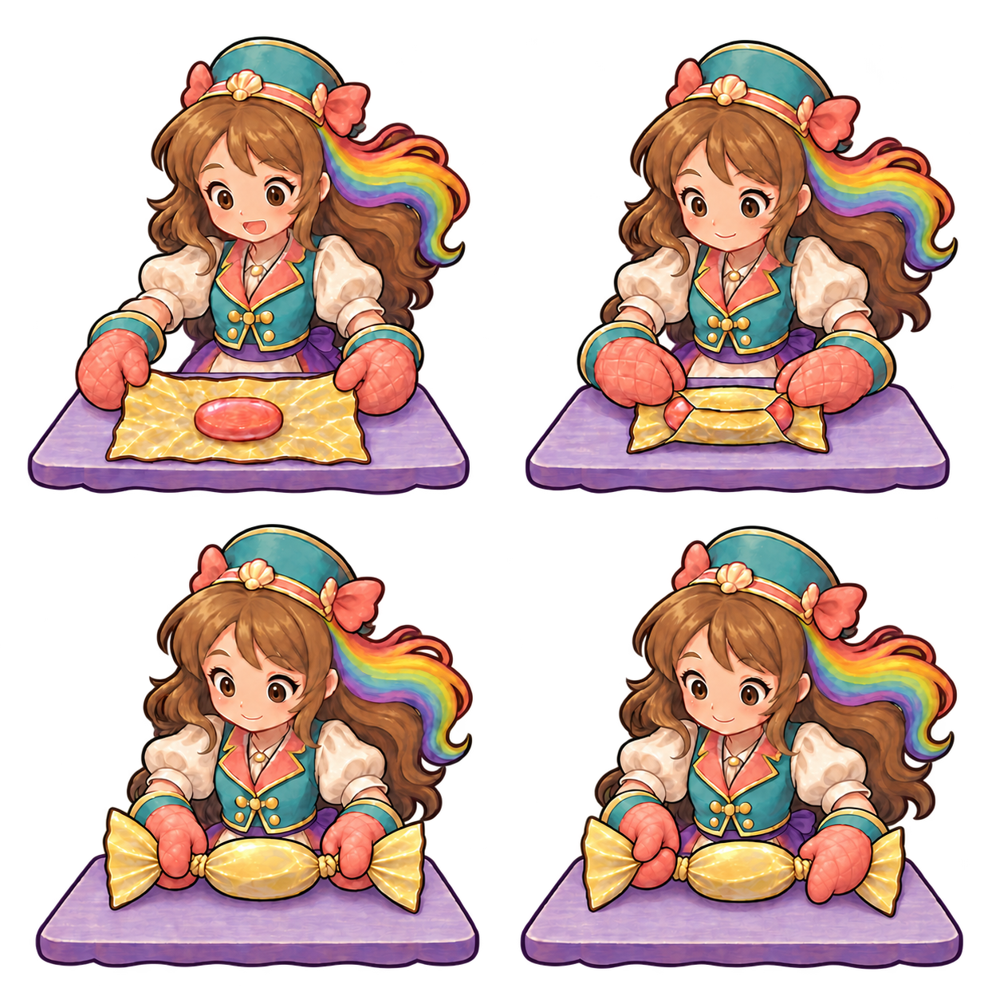
assets_src/imagegen/candy_wrap_contact_v1_20261003/attempt04/native.png · 38320ef203ab67cdcfbc9c4dfde9d502842421be05f0d721e5c8155df2b61159open sheet:4.5/5 · long-edge fold:4.5/5 · neck pinch:4.5/5 · opposite wrist twist:4.5/5
identity/material and individual hand endpoints 4.5/5. A3 identity, material and meaningful two-mitten endpoint contact conserved.
fixed subject continuity 4.1/5. Requested registration repair did not fix local candy/table displacement between top and bottom. Final wrapper belly still materially larger than the exposed sweet; no new runtime test can cure this source mismatch.
Exact generation prompt
Use case: precise-object-edit
Asset type: four authored Candy Maker contact keys for a polished painted 2D preschool game.
Input image 1 is the edit target. Preserve Roshan’s established child face, teal shell hat, coral bows, brown/rainbow hair, cream sleeves, teal/coral vest, two coral quilted mittens and golden crinkled paper.
Primary request: repair only the fixed-object continuity across its four equal square quadrants. The lavender tabletop, head/torso and sweet center currently jump when keys switch. In EVERY quadrant draw exactly the same tabletop size/shape/location, the same unchanged head/hat/hair/torso position and scale, and the sweet belly on exactly the same tabletop point. Place sweet center at local (50%,83%) of EVERY quadrant, with the same candy belly width. Table front edge at local95% height, head/hat and hair safely padded. All non-moving painted shapes must register between quarters. Keep each complete character/table drawing inside its own equal quadrant with transparent gutters.
Keep the four distinct hand-and-paper states in row-major order: top-left holds both long edges of the open sheet with one exposed coral sweet; top-right presses the long golden flaps over that same sweet; bottom-left thumbs/palms pinch the two narrow attached necks with fans outside each mitten; bottom-right keeps those neck grips but left wrist/thumb rolls up and right wrist/thumb rolls down to twist in opposite directions. Two arms visibly connected to the same shoulders in every state. Only forearms, wrists, mittens and paper folds move; do not move the candy or table.
Preserve painted material, broad readable value bands and navy/plum contours. No photoreal hands, whisk, detached arms, duplicate subject, diagrams, guides, labels, captions or scene background. Actual transparent background. This is a matched contact-state sheet, not a decorative series of independently reframed portraits.
Original provenanceAttempt 5 · complete source 4.1/5
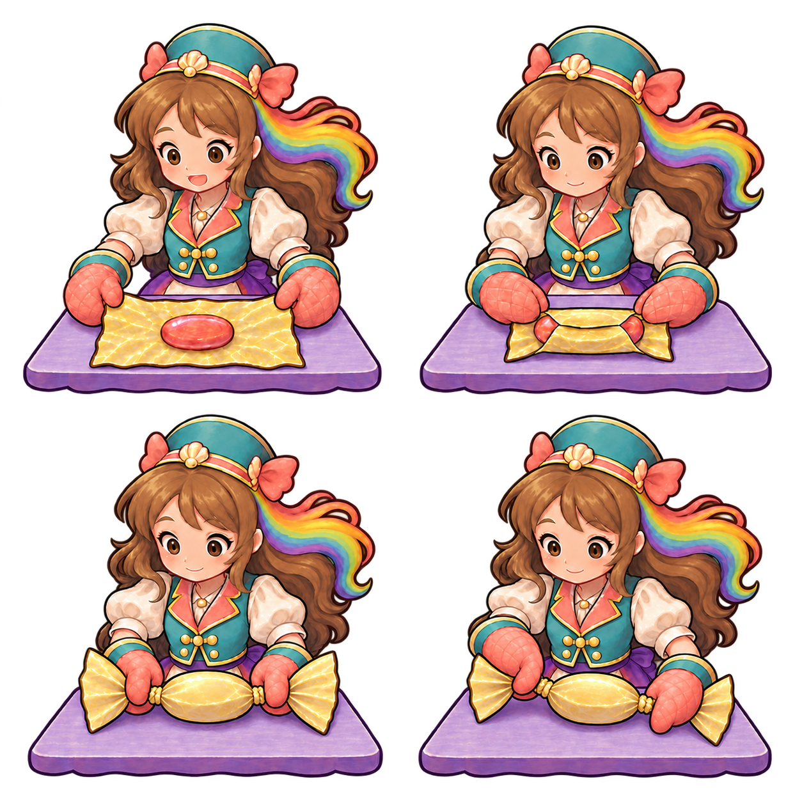
assets_src/imagegen/candy_wrap_contact_v1_20261003/attempt05/native.png · 81e328decc41012dc234d970af82c6084540cb7b1bbc822c8a0117351164c745open sheet:4.5/5 · long-edge fold:4.5/5 · neck pinch:4.5/5 · opposite wrist twist:4.6/5
identity/material/open/fold/pinch endpoints 4.5/5. Two connected arms/coral quilted mittens and painted paper/costume retained.
opposite wrist-roll endpoint 4.6/5. Left palm visibly turns up and right palm down while each thumb keeps its neck pinched; opposite directions now clearer. This endpoint opinion does not approve animation.
fixed candy/table continuity 4.1/5. Sweet belly still grows from exposed oval to lower wrapped states and jumps upward relative to the table. Source body/table registration remains imperfect. No actual whole-action retest or runtime binding.
Exact generation prompt
Use case: illustration-story
Asset type: matched Candy Maker contact-state sheet for a painted 2D game.
Image 1 supplies approved Roshan identity and Candy Maker costume only. Image 2 supplies the exact golden-paper wrapping material and hand contact meanings only; repair its failed alignment.
Create a NEW four-state square atlas on an actual transparent background, two by two equal square cells. This is one fixed-camera character at one stationary lavender tabletop, changing ONLY her forearms, mittens and paper folds. Render the SAME registered head, hat, rainbow hair, shoulders, torso and table in ALL four cells. Do not individually reframe portraits. Within each cell: hat top at10% height; table front at92%; table left/right at8%/92%; candy center at50% width,80% height; oval candy belly width18% of cell. These positions and scales MUST be identical for all cells, including after folding. Keep padding inside every cell. The candy stays physically on the tabletop and does not travel or grow.
Row-major states: 1 Two coral quilted mittens hold the long left/right edges of one flat crinkled gold paper sheet with one coral oval candy exposed at its locked center. 2 Both mittens press that same sheet’s attached long flaps across the sweet, coral tips still visible; never shrink the candy. 3 Both mitten thumbs/palms pinch the narrow paper necks immediately beside the candy belly; broad gold fans outside the gloves. 4 Retain both neck grips, clearly counter-roll left wrist/thumb upward and right wrist/thumb downward to twist those attached necks. Never grasp outer fans. Two arms connected to the same shoulders throughout; wrists move without moving table or candy.
Keep original young child face, teal shell hat, coral bows, brown hair/rainbow strand, cream sleeves, teal/coral vest, gold trim and coral mittens. Polished hand-painted storybook material, rounded toy forms, broad warm value bands, dark plum contours, lavender shadows. No realistic skin hands, whisk, vector shapes, extra arms, detached hands, captions, panels, border lines, guides, backdrop or new costume.
Original provenanceAttempt 6 · complete source 4.3/5
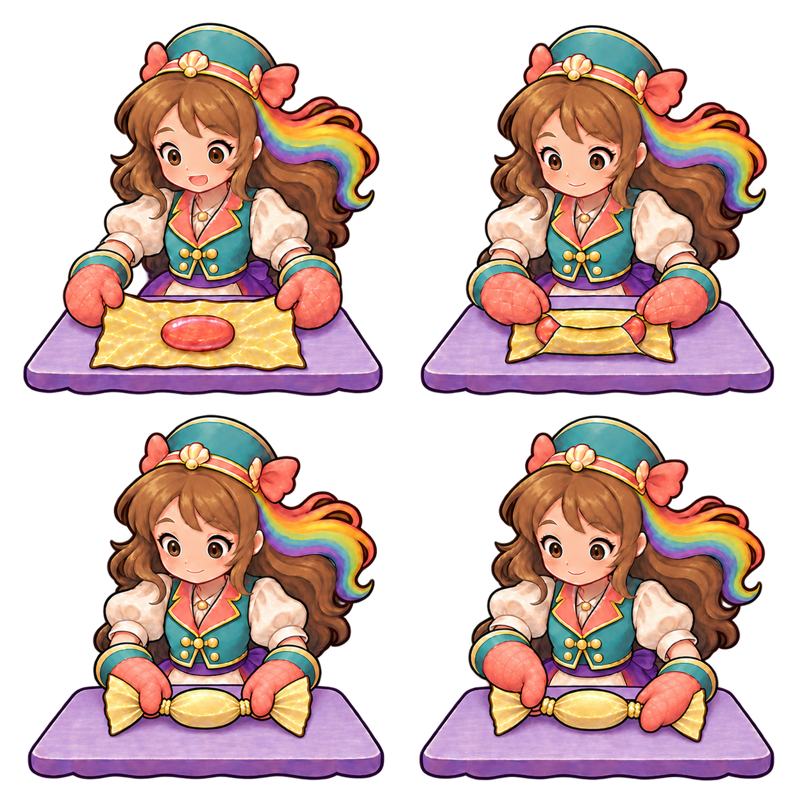
assets_src/imagegen/candy_wrap_contact_v1_20261003/attempt06/native.png · 785093ef3b9a11c867e17ef8d0e8c640d701d5ae1827da98b26d24329e58dac3open sheet:4.5/5 · long-edge fold:4.5/5 · neck pinch:4.5/5 · opposite wrist twist:4.6/5
identity/material/open/fold/pinch endpoints 4.5/5. Two connected arms/mittens and conserved costume/material.
opposite wrist-roll endpoint 4.6/5. Both necks still pinched with opposite palm directions.
physical sweet size across states 4.5/5. Lower wrapped belly now approximately agrees with exposed oval, correcting A5 material enlargement. This is a native source opinion, not runtime acceptance.
fixed table/candy continuity 4.3/5. Lower tabletops and candy still sit too high in their fixed cells. Head stays at roughly the original height, exposing shorter work-body/table spacing. No whole-action or production pass.
Exact generation prompt
Use case: precise-object-edit
Input image 1 is the edit target, a 2x2 equal-cell Candy Maker contact sheet.
Change ONLY the lower two cells. Their huge wrapped sweet is too high on the table compared with the upper exposed coral sweet. Redraw the complete lower-cell hand-and-paper interaction smaller and LOWER on the table: the golden oval belly must be the SAME WIDTH and SAME CENTER as the coral sweet in the upper-left cell when cell coordinates are overlaid. Thus lower-cell candy center moves DOWN by about8% of cell height, and belly width reduces by about25%. Keep the paper physically lying on the table. Move each connected mitten with its narrow neck, adapting the forearms so no detached hands occur. Both broad paper fans remain outside the pinching mittens. Preserve the lower-right distinctly opposite wrist rotations.
Make lower tabletops match the upper-left table exactly in cell-relative position, size, shape and front-edge height. Preserve the upper two cells, and preserve every head/hat/hair/torso/costume/style detail. Four complete drawings stay inside equal square cells with transparent gutters. Do not reframe independently, enlarge candy, invent a new pose, add guides, text or background. Actual transparent background.
Original provenanceAttempt 7 · complete source 4.5/5
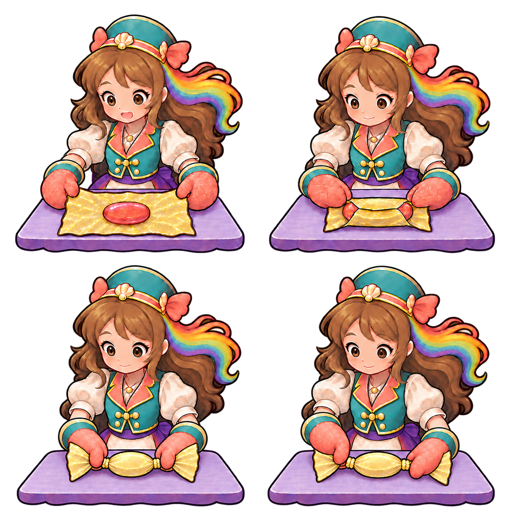
assets_src/imagegen/candy_wrap_contact_v1_20261003/attempt07/native.png · 7207d74c283e6c45c61e0d453ab5c476027611065f84ce75750407875816f467open sheet:4.5/5 · long-edge fold:4.5/5 · neck pinch:4.5/5 · opposite wrist twist:4.6/5
identity/material/open/fold/pinch endpoints 4.5/5. Same connected two arms/coral mittens/costume and painted paper.
opposite wrist-roll endpoint 4.6/5. Neck grips remain attached and left/right wrists turn visibly in opposite directions.
physical candy size 4.5/5. Wrapped belly stays near exposed oval scale after A6 correction.
source table/contact continuity 4.5/5. Lower contacts/table now lowered together relative to unchanged heads, substantially reducing A6 jump. Minor residual cell-relative variation requires actual neighboring-frame inspection; static provisional score does not accept continuous action.
Exact generation prompt
Use case: precise-object-edit
Image 1 is the edit target. Targeted repair to ONLY the lower two cells of this 2x2 equal-cell contact atlas.
The LOWER TWO lavender tables and candies are about35 pixels too high relative to the upper-left table and exposed coral sweet. Keep lower-cell heads/hats/hair at their current positions, but redraw the complete TABLE, paper and gripping mittens about35 pixels LOWER in each lower cell. Extend the torso and connected sleeved forearms downward to reach them. Place the wrapped oval’s center at the same cell-relative (x,y) as the exposed coral oval in top-left; keep its existing corrected size. Align the table front edges to exactly the upper-left cell’s front edge. All artwork must still fit the square cell with a small transparent margin.
Do not move or resize heads/hats/hair. Do not enlarge candy. Preserve the bottom-left double neck pinch, bottom-right opposite wrist turn, material, anatomy, costume and the upper two cells. No new text/guides/background. Actual transparent background.
Original provenanceAttempt 8 · complete source 4.1/5
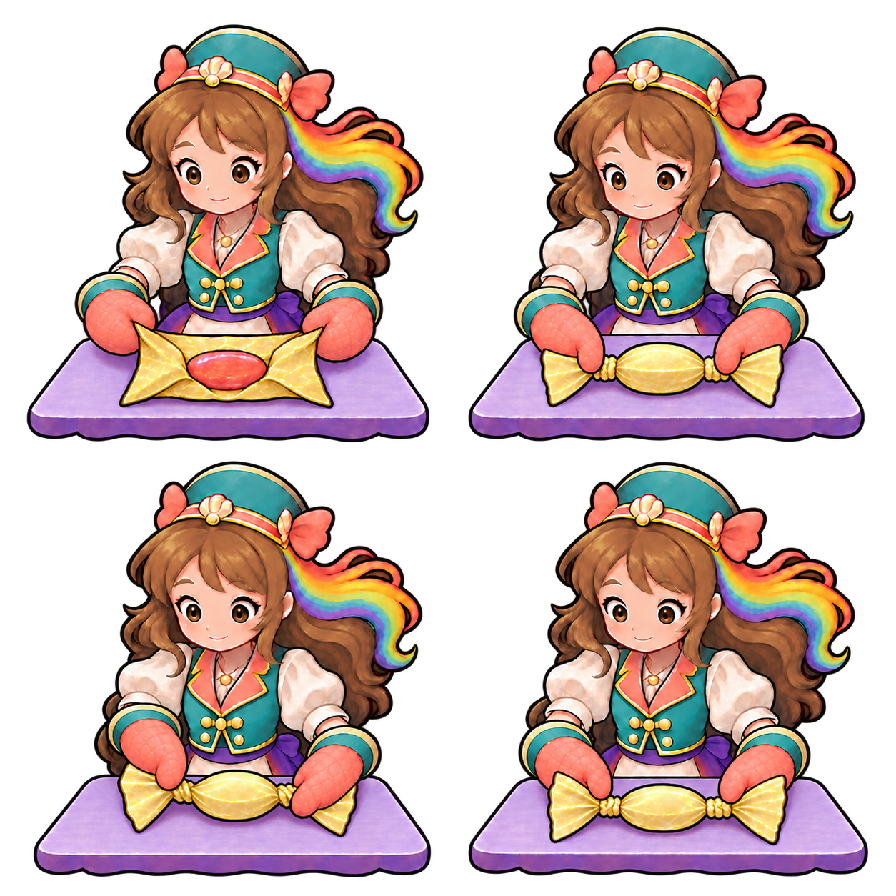
assets_src/imagegen/candy_wrap_contact_v1_20261003/attempt08/native.png · 63815c9b4a5778af05c308c292cb5b77b13f70500710ca53547518271c8d12b9Half edge fold:4.5/5 · Slide to necks:4.1/5 · Half opposing roll:4.4/5 · Relaxed settle:4.2/5
Half edge fold 4.5/5. Mittens support a partly folded continuous gold sheet, retaining an exposed central sweet. Static contact only.
Slide to necks 4.1/5. Paper necks are already tightly twisted; this skips the intended untwisted sliding/contact bridge and reverses chronology when followed by A7 pinch.
Half opposing roll 4.4/5. Opposing grip is understandable, but belly enlarges and sits higher than A7; the action continuity gap remains.
Relaxed settle 4.2/5. Mittens still clasp the finished necks; requested release/relaxation is absent. Belly remains oversized.
Whole bridge source 4.1/5. Partial fold improves, but premature twists, sweet size/height drift and absent relaxed settle reject the bridge sheet. Preserve exact native and do not bind it.
Exact generation prompt
Use case: illustration-story
Asset type: four authored intermediate hand-and-paper states for the existing 2D Candy Maker wrapping action; transparent RGBA, precisely the same 2 by 2 square grid as the reference.
Input image 1: appearance, identity, costume, table geometry and golden-paper wrapper reference. Preserve its Roshan identity, waist-up framing, two connected arms, sleeves, coral oven mittens, teal vest, hat, rainbow hair, outline and broad painted shading. This is a continuity repair, not a redesign.
Primary request: draw ONLY the four missing intermediate actions described below. Each cell shows the same complete Roshan upper body and lavender table, with exactly the same head center, shoulder height, table outline and tabletop baseline. Keep her small calm smile and downward attention identical in every cell; no head bob or torso scale change. Keep the sweet belly centered on the same point of the tabletop, same size and never lifted.
Top-left: between reference open sheet and reference folded sheet. Both mittens lift the two long paper edges halfway toward the exposed coral oval sweet. One continuous golden paper sheet, partial fold, sweet still partly exposed.
Top-right: between reference folded sheet and reference neck pinch. The paper now encloses the sweet; both mittens slide inward to just touch the two narrow necks. Broad end fans stay attached and supported. Do not grasp outer fan tips.
Bottom-left: between reference neck pinch and reference opposite wrist twist. Both mittens firmly grip the narrow necks, left wrist beginning to roll up and right wrist beginning to roll down. Only a small half-turn, two attached creased gold necks; sweet belly remains fixed on the table.
Bottom-right: settled end immediately after reference wrist twist. Same finished golden-paper sweet, narrow twisted necks and attached fans. Both mittens gently relax next to the necks without moving the sweet or table.
Composition: four complete independent square cells, equal quadrants, transparent gutters and full contours within each cell. No text, arrows, motion marks, background scene, duplicated/extra fingers, disconnected hands, whisk or utensils. Smooth authored continuity in the connected elbows/mittens and paper between these action stages. Do not change appearance-bearing parts merely to differentiate the cells. Preserve real transparency.
Original provenanceAttempt 9 · complete source 4.1/5 · rejected
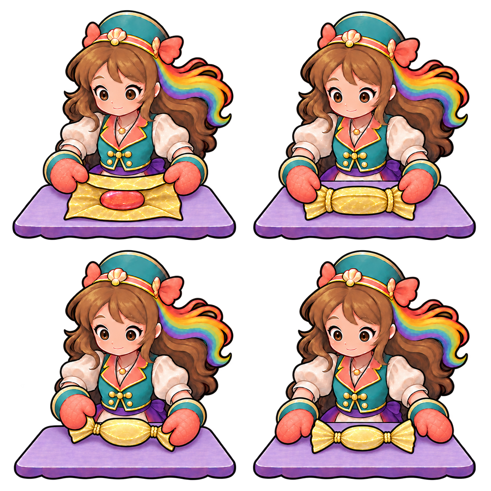
8eedbe7b8caebe89259a8e33c17291ed924c548e2c53d23f66d0e9cea669ad07Half edge fold · 4.5/5. Mittens support one partly folded gold sheet around the exposed sweet. Static contact only.
Slide to untwisted necks · 4.1/5. Raised ring-like bands still close the necks before the intended pinch and twist; the central sweet becomes much wider and taller. Chronology and conserved candy size fail.
First opposing wrist roll · 4.3/5. Two hands stay connected and contact the wrapper, but the belly remains enlarged and the neck is already tightly coiled. This is not the missing small initial roll.
Released settle · 4.5/5. Both mittens visibly release and rest outside attached fans; the wrapped sweet has readable narrow twisted necks. Static endpoint only.
Whole bridge source · 4.1/5. Release is improved. Premature closure and candy-size/support drift reject the complete bridge sheet. Do not bind it or transfer endpoint scores to full action.
Exact provenance · Individual evaluations · Exact built-in prompt
Attempt 10 · complete source 4.2/5 · rejected
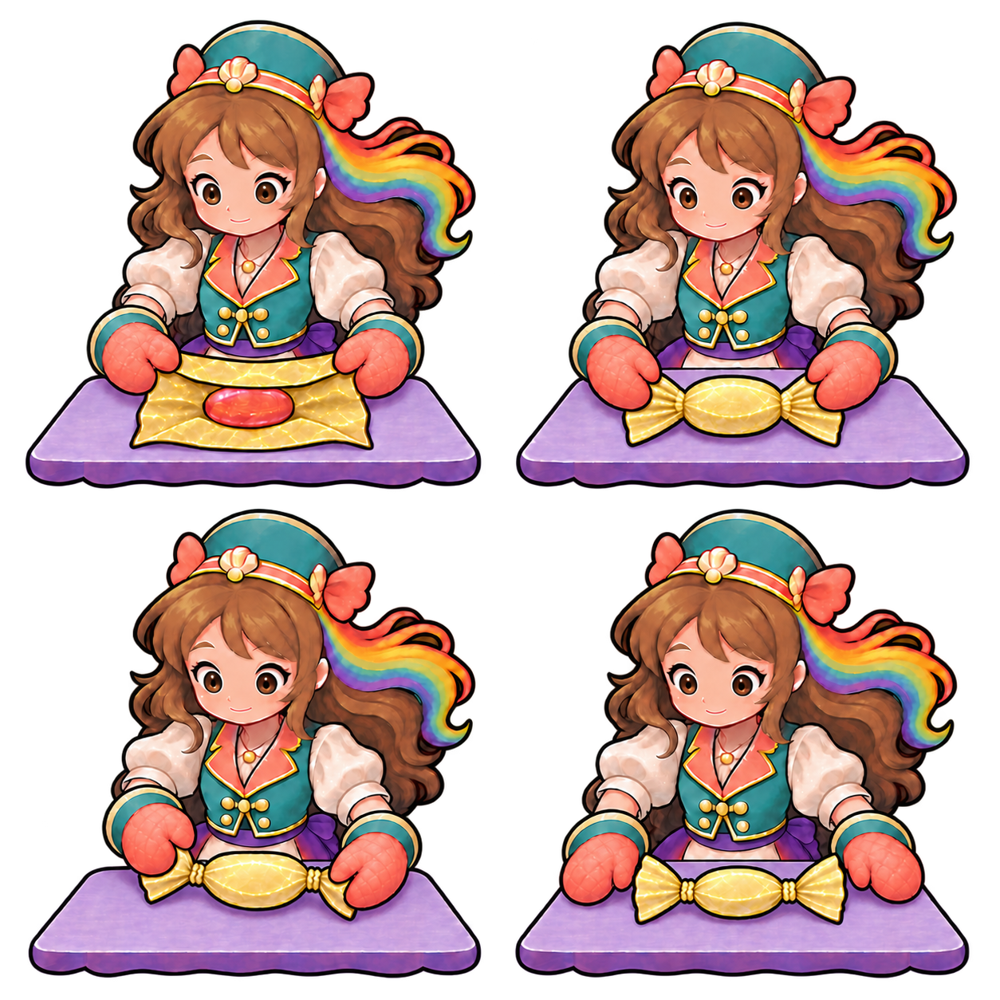
60a6df848d14041a01df87be31ad06c97533fed05509decde09b008708695b39Half edge fold · 4.5/5. One continuous gold sheet partly encloses the red sweet; two mittens contact the lifted edges. Static source state only.
Slide to untwisted necks · 4.4/5. Premature gold rings are removed, so the necks now read as untwisted attached pleats. Mittens still hold the broad fans outside the narrow necks; the enclosed belly remains taller than the original sweet. The missing sliding grip is not yet accepted.
First opposing wrist roll · 4.3/5. Connected arms are sound, but the early-roll state still has an oversized belly and already tight coiled necks inherited from the edit target. It remains a rejected intermediate.
Released settle · 4.5/5. Both mittens rest clear of the attached fans; the finished gold sweet remains supported on the table. Useful static endpoint, not a full-action pass.
Whole bridge source · 4.2/5. Untwisted pleats and release improve wrapper semantics. Missing slide contact, candy-size drift and an already finished half-roll still reject complete bridge continuity. Actual A5 motion remains 4.1; no new binding.
Exact provenance · Individual evaluations · Exact built-in prompt